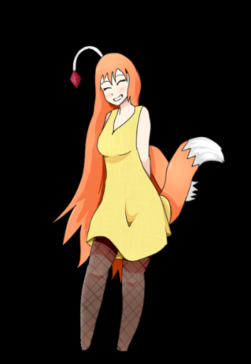
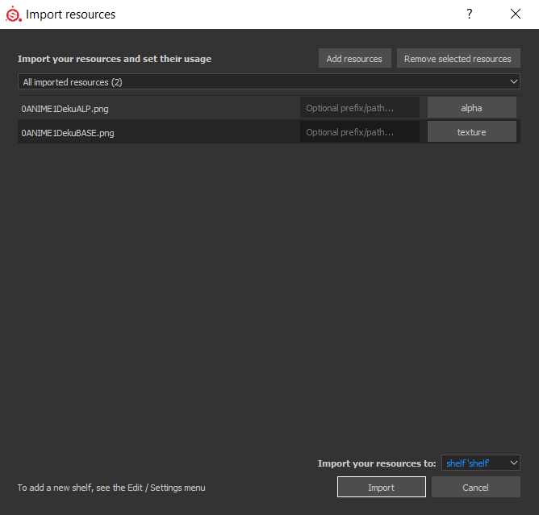
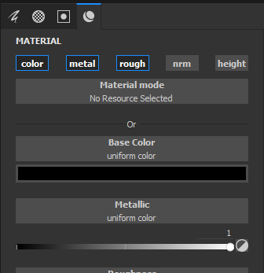
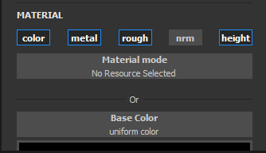
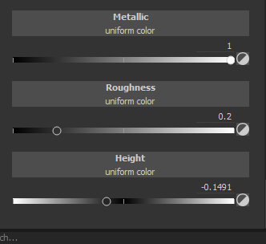

Stamps
A video guide on making stamps, made by Moorus.
If you have a image in mind which you want to implement to your skin, you'll have to convert it into a stamp!
This will need some sort of image editing software, such as Photoshop or GIMP
When you have one of these options:
File --> New
Make a 2048 x 2048 image
Make the background completely black
Then import your image
The example I'll be using is one of my own artworks (credit where credit is due! I'll remind you in the bottom of this tutorial)

Your example should be centered, with an all black background
Save it as a png with any name
Afterwards, highlight your stamp in all white, just like this
Save with a similar name to your first picture, with "alp, alpha, or A" added onto it
The first picture is your color. The second picture is your alpha, the tool needed to post the color onto your canvas
Once you have both of these pngs ready, exit out of your image editing software and load up Substance Painter.
Drag the two PNGs you made, color and alpha, into the shelf of Substance painter
A window will pop up
There are details for you to fill
For your alpha, classify it as an alpha among the four choices available
For your color, classify it as a texture among the four choices available
The location of these resources, select as "Project" if you want to specify that it only belongs to the certain gun you are working on. If you want it available for all the projects you plan to work on, select "shelf"

So it should look something like this in the end.
When it does, click "Import"
Now, the images should be available as an Alpha and Base Color!
Note
For public releases of skins, if images used as stamps are not original works, I 100% recommend for you to leave the source of the images used, something like a txt file associated with the hotmod/zip file of the skin. Or, leave a source in the Bonetome Submission Description if you plan on making it public with Bonetome. If the skin is a duplicate of a gun skin from another game, mention that it is a recreation of the skin from said game.
Engraving
If you are more interested into delicate or intricate stamps designed for the higher class, here's how to do it.
Select an alpha you want to engrave.
Right click with it equipped to open the painting toolbar
Go all the way down to color and details of the brush

Select Material, and choose "Brass" as a starting place for metallic and roughness features.
"Height" will be disabled when you choose this material, so be sure to enable it with a click of the mouse.

After you decide on a color, scroll down.

If you activated "height", you can find it down below. Scale it between -.12 and -.2 for the ideal engraving image and make glorious engravings!